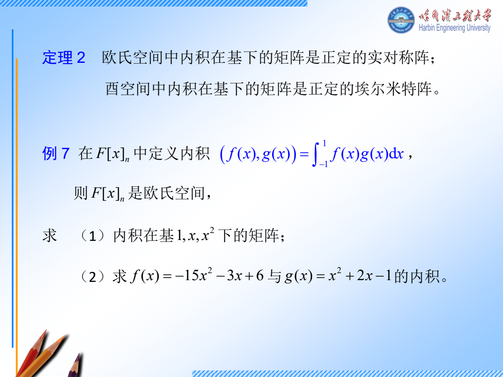
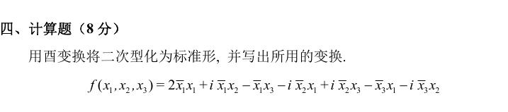
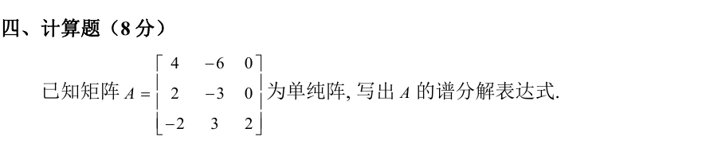
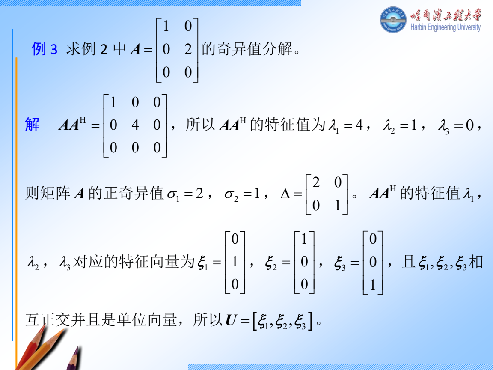
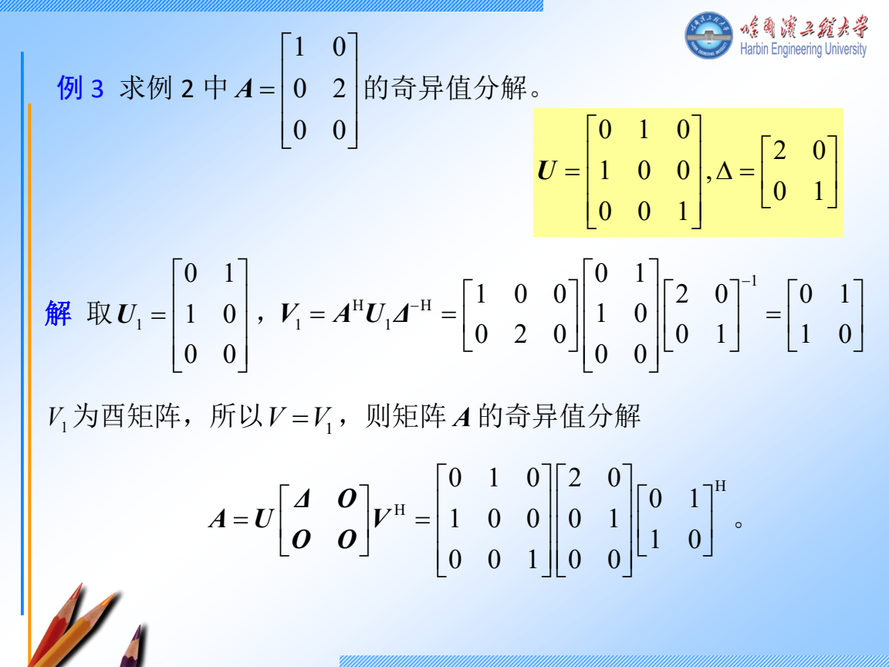
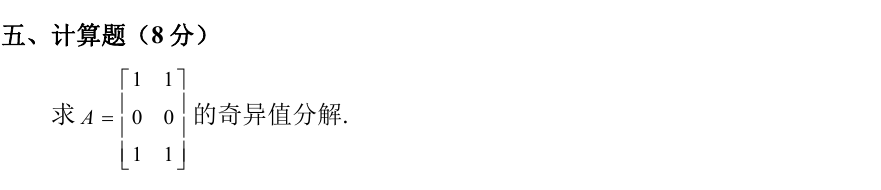
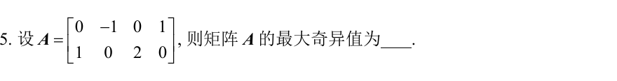
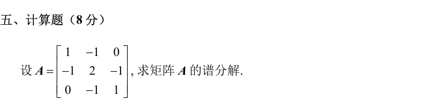

周四 11 月 12 日｜内积、谱分解和 SVD
今天 210 分钟。 内积与特殊阵 40 分钟，谱分解 50 分钟，SVD 55 分钟，分解条件与练习 50 分钟，最后 15 分钟闭卷检查。只剩 90 分钟时，做跟做 2 和 D1，然后用 D2 区分「只求奇异值」和「交完整分解」。
讲义与跟做
跟做 1 用内积找到投影，为什么要减掉一个分量
在 span(1,x) 中用 ⟨f,g⟩=∫01f(x)g(x)dx，把 1,x 正交化。
- 求两两内积。 ⟨1,1⟩=1, ⟨1,x⟩=1/2, ⟨x,x⟩=1/3。按基向量顺序摆出度量矩阵 G=[11/21/21/3]。坐标列 u,v 的内积是 uTGv。复数题若第一变量共轭线性，就写 uHGv。
- 消去与第一方向重合的部分。 从 x 减去 c⋅1，要求 ⟨1,x−c⟩=0。于是 1/2−c=0，所以投影为 1/2，正交方向为 w=x−1/2。
- 归一。 ∥w∥2=∫01(x−1/2)2dx=1/3−1/2+1/4=1/12。因此一组标准正交基是 1,12(x−1/2)。
- 迁移到向量。 若投影目标向量 u 尚未归一，实内积下 projuv=(uTv)/(uTu)u。要求正交补时，对原子空间的每个基向量 ui 各列一条 uiHv=0 再消元。

特殊矩阵先看定义
| 名称 |
判定和能用的结论 |
| Hermite |
AH=A，实矩阵时就是对称。特征值都实，可选标准正交特征基。 |
| 酉 |
AHA=I，即列向量标准正交。若 Av=λv，两边取 2 范数得 ∣λ∣=1。 |
| 正规 |
AAH=AHA。在复数域等价于可酉对角化，包含 Hermite 与酉矩阵。 |
| Hermite 正定 |
xHAx>0 对每个非零 x 成立。可查全体特征值为正，或全部顺序主子式为正。 |
二次型怎么做。 若 A=[2112]，χA(t)=(t−2)2−1，根是 3、1。分别取单位向量 (1,1)T/2,(1,−1)T/2，拼成 U。设 x=Uy，则 xTAx=yTUTAUy=3y12+y22。两个系数都正，也可验顺序主子式 2,3>0。复数二次型同样写 x=Uy 和 UHAU。
跟做补讲 2022 哈尔滨 IV，复二次型怎样写成对角形

- 把 xˉixj 的系数放在第 i 行第 j 列。 比如 ixˉ1x2 给出 a12=i，而 −ixˉ2x1 给出 a21=−i。按这个规则逐项填写，题目的二次型就是 xHAx，其中
A=2−i−1i0−i−1i0.
对角是实数，上下对称位置互为共轭，因此 AH=A。
- 先求特征值。 沿 tI−A 第一行展开，得到 (t−2)(t2−1)−(t+1)−(t+1)=t(t+1)(t−3)。所以三个特征值是 −1,0,3。
- 每个特征值分别解一次方程。
- 当 t=−1，第二行给 x2=i(x1−x3)，代入第一行得 2x1=0。取 x3=1，得到 v−1=(0,−i,1)T。
- 当 t=0，第二行给 x3=x1，第三行给 x2=ix1。取 x1=1，得到 v0=(1,i,1)T。
- 当 t=3，第一行给 x3=−x1+ix2。代入第二行得 −2ix1−4x2=0，所以 x2=−ix1/2, x3=−x1/2。取 x1=2，得到 v3=(2,−i,−1)T。
- 归一并写出变换。 复向量的长度平方是各分量模平方之和，例如 v−1 的长度是 0+1+1=2。三个长度依次为 2,3,6。由于 A 是 Hermite 矩阵，三个不同特征值对应的特征向量已正交。取
U=[2v−1,3v0,6v3],x=Uy.
- 交卷时把变换和标准形都写出。 由 UHAU=diag(−1,0,3)，有 xHAx=−∣y1∣2+3∣y3∣2。验算时用 Avj=λjvj，并记住 vjH 要先共轭再转置。
跟做 2 2024 青岛 IV，一般可对角化矩阵怎样求谱分解

- 求不同特征值。 tI−A 的第三列只有 t−2。左上二阶块的行列式是 (t−4)(t+3)+12=t(t−1)。所以不同特征值为 0,1,2，三根互异，矩阵可对角化。
- 为每个特征空间做一个开关。 P1 要在特征值 1 的向量上原样返回，在另外两种上变成零。令 p1(t)=t(t−2)/(1⋅(−1))，它在 0,1,2 取值 0,1,0，所以 P1=p1(A)=2A−A2。同理 P2=(A2−A)/2, P0=I−P1−P2。
- 实际相乘。 先算 A2=42−6−6−39004。例如第三行第一项为 (−2)4+3⋅2+2(−2)=−6。因此
P0=−3−20640000,P1=422−6−3−3000,P2=00−2003001.
- 写谱分解和验算。 A=0P0+P1+2P2。检查 P0+P1+P2=I，而 P1+2P2 的第三行是 (2,−3,0)+2(−2,3,1)=(−2,3,2)。投影在一组特征基上分别只保留自己的特征空间，所以 Pi2=Pi，且 PiPj=0（i=j）。本题投影一般不对称。正规矩阵才可以用各特征空间的标准正交基写 Pi=∑juijuijH。
跟做 3 先按 PPT 原例学完整 SVD

- 原例 A=100020 是 3×2。完整分解中 U 是 3×3，Σ 是 3×2，V 是 2×2。
- 计算 ATA=[1004]。按特征值从大到小排列 4,1，开根得奇异值 2,1。对应右向量 v1=e2,v2=e1。
- 算 Av1=2e2,Av2=e1。两边除对应奇异值，得 u1=e2,u2=e1（这里的 ei 属于 R3）。补 u3=e3 得完整的 U。
- 写 U=[e2,e1,e3], V=[e2,e1], Σ=200010。验 AV 和 UΣ 都是按列 [2e2,e1]，所以 A=UΣVT。对零奇异值，Avi=0，左向量要补在已有左向量的正交补里。
看第四章 P25 的原课件续解

其他分解怎样起手
- LU/LDU。 取 A=[2415]。第二行减第一行的两倍得 U=[2013]。消元乘数 2 写进 L=[1201]，乘回 LU=A。要 LDU，再从 U 左边提出 D=diag(2,3)，余下单位上三角阵。不换行时先看主元，交换矩阵可逆却不能直接作这种 LU。
- Cholesky。 对称正定的 B=[4222]=LLT。第一列从 l112=4 取正根 2，l21l11=2 得 1。第二个对角由 l212+l222=2 得 l22=1。验 L=[2101] 可乘回。
- UR/QR。 对各列做施密特。以 a1=(1,1)T,a2=(1,−1)T 为例，两列已正交，qi=ai/2，R=2I。一般第二列先减 q1(q1Ha2) 再归一，r12=q1Ha2。
- 满秩分解。 [1326]=(1,3)T[1 2]。左因子取原阵的独立列，右因子记录每个原列的坐标。两个因子的秩都等于 r=1。
独立练习
D1 2024 青岛 V 完整 SVD，限时 12 分钟

看分步答案
- 两列都是 (1,0,1)T，两列的内积都等于 2，故 ATA=[2222]。
- (1,1)T 经该矩阵变为自身的 4 倍，(1,−1)T 变为零。归一后取 v1=(1,1)T/2, v2=(1,−1)T/2，奇异值为 2,0。
- Av1=2(1,0,1)T，除 2 得 u1=(1,0,1)T/2。取 u2=e2, u3=(1,0,−1)T/2，三列单位且彼此正交。
- U=[u1,u2,u3], V=[v1,v2], Σ=200000。核对 AV=[2u1,0]，与 UΣ 相同。单独写「2、0」只回答了奇异值。
D2 2024 哈尔滨 II.5 最大奇异值，限时 4 分钟

看分步答案
- A 只有两行，算更小的 AAT。两行的平方长度分别为 2、5，内积为 0。
- 所以 AAT=diag(2,5)，最大特征值 5。AAT 与 ATA 的正特征值相同。
- 开根得到 σmax=5。题目只问这个数，到此即可。
D3 2024 哈尔滨 V 实对称矩阵的谱分解，限时 12 分钟

看分步答案
- 每行和为零，故 b0=(1,1,1)T 对应 0。试首尾反向的 b1=(1,0,−1)T，相乘得 Ab1=b1。
- 要找垂直于前两列的方向，令 b3=(a,b,c)T。由 a−c=0, a+b+c=0，取 a=c=1,b=−2，得到 b3=(1,−2,1)T，且 Ab3=(3,−6,3)T=3b3。
- 三列归一后的投影分别是 P0=b0b0T/3, P1=b1b1T/2, P3=b3b3T/6。因此 A=0P0+P1+3P3。
- 验第一行第一项 1/2+3/6=1，第一行第二项 0−6/6=−1，第一行第三项 −1/2+3/6=0，与原阵相符。剩余元素可按同法核对。
当天验收
说出从 A 本身的特征值建谱投影、从 AHA 的特征值开根这两条路径。闭卷交出 D1 的三个因子，并在 D3 中检查投影权重。碰到尺寸或左右向量弄反，明天先写一遍 AV=UΣ。